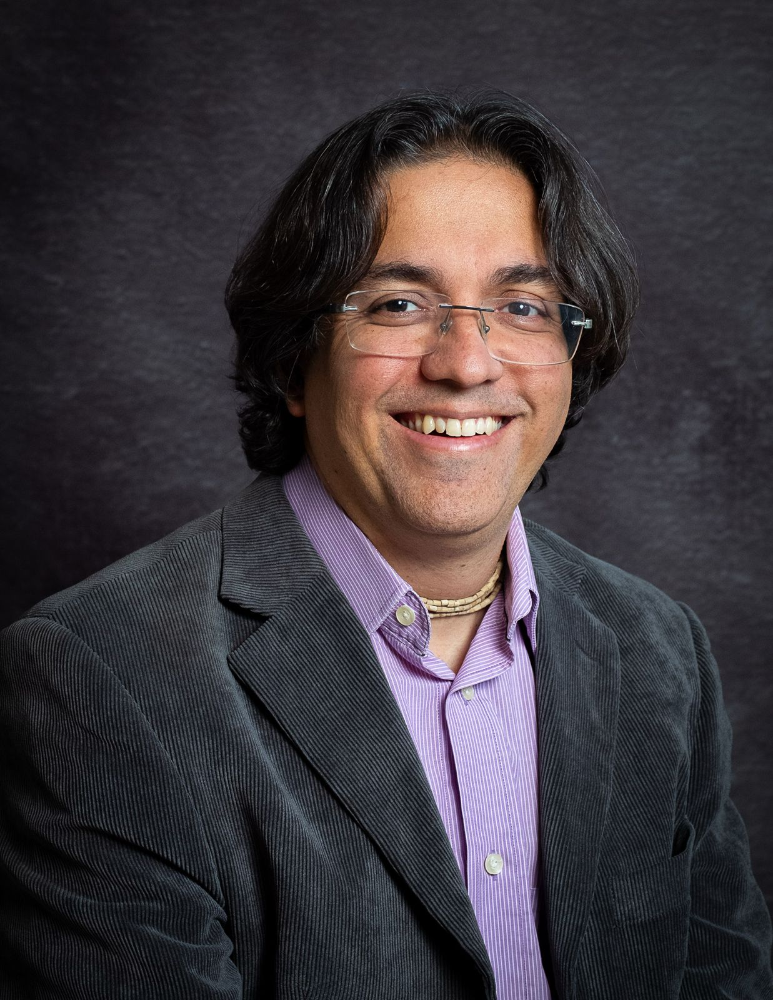

Dr. Romero Carvalho
(Sri Krishna Murti Das)
PhD / PUC-MG/ Ciências da Religião
Biografia
Dr. Romero Carvalho (Sri Krishna Murti Das) é doutor e mestre em Ciências da Religião pela PUC-MG, com pesquisas sobre temas relacionados ao Hinduísmo, diálogo hindu-cristão, com pós-doutorado em andamento sobre Deusas hindus. Jornalista há 25 anos, formado em Comunicação Social pela UNI-BH, com Pós-graduação em Jornalismo Cultural, é também radialista e editor.
É membro da ISKCON - Sociedade Internacional para a Consciência de Krishna há 26 anos, discípulo de Radhanath Swami, e já foi presidente da instituição em Belo Horizonte, secretário de comunicação nacional, editor e revisor da BBT.